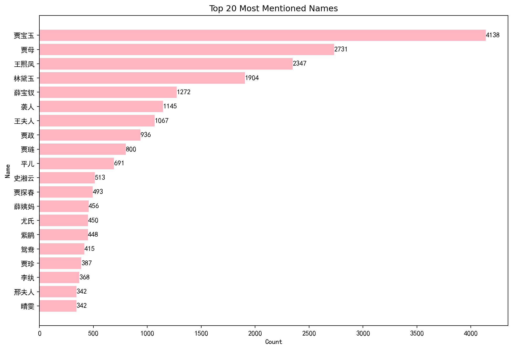

Code
# The echo: false option disables the printing of code (only output is displayed).
with open("data/fulltext_simplified.txt", "r", encoding="utf-8") as file:
main_text = file.read()Pascal Martinolli ![]()
dataviz; data visualization; Dream of the Red Chamber; 红楼梦
This paper presents data visualizations focusing on the three main protagonists of Dream of the Red Chamber (红楼梦), a classic work of Chinese literature. It presents the results of some experiments I conducted using Python in a Quarto environment with Jupyter.
Importing fulltext_simplified.txt, a text file retrieved from lilesIII. It is written with simplified chinese characters.
# The echo: false option disables the printing of code (only output is displayed).
with open("data/fulltext_simplified.txt", "r", encoding="utf-8") as file:
main_text = file.read()Putting the content into a panda dataframe and shampooing the data :
| Chapter_num | Chapter | RawContent |
|---|---|---|
| integer | extracted from header of the chapter | full text of the chapter |
We construct a list of name variants and synonyms for the three main protagonists—Jia Baoyu, Lin Daiyu, and Xue Baochai—and quantify their occurrences throughout the 120 chapters.
# Count how many times the three main protagonists are counted in RawContent
# Synonyms are enriched thanks to Wikidata (in labels).
# List of Jia Baoyu's synonyms https://www.wikidata.org/wiki/Q8428650
jia_baoyu_synonyms = [
'贾宝玉', '賈寶玉', '寶玉', '寶二爺', '怡紅公子',
'絳洞花王', '富貴閒人', '宝玉', '宝二爷',
'絳洞花主', '绛洞花主', '怡红公子', '绛洞花王'
]
# Join them into a regex pattern
jia_baoyu_pattern = '|'.join(jia_baoyu_synonyms)
# Use in your count
df_cn['count_JiaBaoyu'] = df_cn['RawContent'].str.count(jia_baoyu_pattern)
# List of Lin Daiyu's synonyms
lin_daiyu_synonyms = [
'林黛玉', '黛玉', '瀟湘妃子', '顰兒', '颦儿',
'林姑娘', '林妹妹', '潇湘妃子', "玉儿", "颦颦",
]
# Join them into a regex pattern
lin_daiyu_pattern = '|'.join(lin_daiyu_synonyms)
# Use in your count
df_cn['count_LinDaiyu'] = df_cn['RawContent'].str.count(lin_daiyu_pattern)
# List of Xue Baochai's synonyms
xue_baochai_synonyms = [
'薛寶釵', '薛宝钗', '寶釵', '宝钗',
'蘅蕪君', '蘅芜君', '寶姑娘', '宝姑娘',
'寶丫頭', '宝丫头', '寶姐姐', '宝姐姐'
]
# Join them into a regex pattern
xue_baochai_pattern = '|'.join(xue_baochai_synonyms)
# Use in your count
df_cn['count_XueBaochai'] = df_cn['RawContent'].str.count(xue_baochai_pattern)A chapter-by-chapter heatmap is generated, where color intensity corresponds to the frequency of mentions of any of the three main protagonists.
#Note that we included the cell option fold: true to hide the code by default (click the Code button to show it).
# pip install scikit-learn jieba seaborn matplotlib
# Draw a heat map for each entry and the values of the columns
import seaborn as sns
import matplotlib.pyplot as plt
import numpy as np
# Set Chapter_num as index for labeling rows in the heatmap
heatmap_data = df_cn.set_index('Chapter_num')[['count_JiaBaoyu', 'count_LinDaiyu', 'count_XueBaochai']]
# Create the heatmap
# Plot the heatmap without labels or annotations
plt.figure(figsize=(10, 6))
sns.heatmap(
heatmap_data,
annot=False, # No numbers inside cells
cmap='RdPu', # palette of colors
linewidths=0.5,
cbar=True,
xticklabels=True, # column names
yticklabels=False # No row labels
)
# Set y-ticks at intervals of 25
num_rows = heatmap_data.shape[0]
ticks = np.arange(0, num_rows, 25)
plt.yticks(ticks + 0.5, ticks + 1) # +0.5 centers ticks in cells, +1 shifts to 1-based indexing
plt.title('«Dream of the Red Chamber» Three Main Protagonists \n(Number of Mentions per Chapter)')
plt.ylabel('Chapter Number')
plt.xlabel('') # Remove the x-axis label
plt.tight_layout()
plt.savefig('images/characters_count_hlm.png', dpi=300, bbox_inches='tight')
plt.show()
It’s not very readable, but it gives a rough idea of which parts of the novel involve interactions between the protagonists.
# Set up data
chapter_nums = df_cn['Chapter_num']
counts_baoyu = df_cn['count_JiaBaoyu']
counts_daiyu = df_cn['count_LinDaiyu']
counts_baochai = df_cn['count_XueBaochai']
# Set figure size
plt.figure(figsize=(12, 6))
# Plot stacked bars
plt.bar(chapter_nums, counts_baoyu, label='Jia Baoyu', color='mediumvioletred')
plt.bar(chapter_nums, counts_daiyu, bottom=counts_baoyu, label='Lin Daiyu', color='orchid')
plt.bar(
chapter_nums,
counts_baochai,
bottom=counts_baoyu + counts_daiyu,
label='Xue Baochai',
color='plum'
)
# Labels and legend
plt.title('«Dream of the Red Chamber» Three Main Protagonists\n(Number of Mentions per Chapter)')
plt.xlabel('Chapter Number')
plt.ylabel('Number of Mentions')
plt.legend()
plt.tight_layout()
# Save and show
plt.savefig('images/characters_count_stackedbars.png', dpi=300, bbox_inches='tight')
plt.show()This one is not stacked, so it’s more readable.
# Set up data
chapter_nums = df_cn['Chapter_num']
counts_baoyu = df_cn['count_JiaBaoyu']
counts_daiyu = df_cn['count_LinDaiyu']
counts_baochai = df_cn['count_XueBaochai']
# Set figure and axes
fig, axs = plt.subplots(3, 1, figsize=(12, 10), sharex=True)
# Jia Baoyu
axs[0].bar(chapter_nums, counts_baoyu, color='mediumvioletred')
axs[0].set_title('Jia Baoyu – Number of Mentions per Chapter')
axs[0].set_ylabel('Mentions')
# Lin Daiyu
axs[1].bar(chapter_nums, counts_daiyu, color='orchid')
axs[1].set_title('Lin Daiyu – Number of Mentions per Chapter')
axs[1].set_ylabel('Mentions')
# Xue Baochai
axs[2].bar(chapter_nums, counts_baochai, color='plum')
axs[2].set_title('Xue Baochai – Number of Mentions per Chapter')
axs[2].set_ylabel('Mentions')
axs[2].set_xlabel('Chapter Number')
# Tweak layout
plt.suptitle('«Dream of the Red Chamber» – Character Mentions per Chapter', fontsize=16, y=1.02)
plt.tight_layout()
plt.savefig('images/characters_count_separate_bars.png', dpi=300, bbox_inches='tight')
plt.show()Threshold (maximum distance between two names mentioned) = 20 words.
# Count how many times there is a jia_baoyu_synonyms AND a lin_daiyu_synonyms within 20/threshold characters.
threshold = 20
# Compile regex patterns (non-capturing groups for clarity)
jia_baoyu_pattern = r'(?:' + '|'.join(jia_baoyu_synonyms) + r')'
lin_daiyu_pattern = r'(?:' + '|'.join(lin_daiyu_synonyms) + r')'
# Pattern: 贾宝玉 followed by ≤20/threshold chars then 林黛玉, OR 林黛玉 followed by ≤20/threshold chars then 贾宝玉
jia_lin_pattern = rf'{jia_baoyu_pattern}.{{0,{threshold}}}{lin_daiyu_pattern}|{lin_daiyu_pattern}.{{0,{threshold}}}{jia_baoyu_pattern}'
# Function to count matches in a string
def count_jia_lin_pairs(text):
return len(re.findall(jia_lin_pattern, text))
# Apply to the DataFrame
df_cn['JiaBaoyu_LinDaiyu'] = df_cn['RawContent'].apply(count_jia_lin_pairs)
# count pairs of jia et xue
xue_baochai_pattern = r'(?:' + '|'.join(xue_baochai_synonyms) + r')'
# Pattern: 贾宝玉 followed by ≤20/threshold chars then 林黛玉, OR 林黛玉 followed by ≤20/threshold chars then 贾宝玉
jia_xue_pattern = rf'{jia_baoyu_pattern}.{{0,{threshold}}}{xue_baochai_pattern}|{xue_baochai_pattern}.{{0,{threshold}}}{jia_baoyu_pattern}'
# Function to count matches in a string
def count_jia_xue_pairs(text):
return len(re.findall(jia_xue_pattern, text))
# Apply to the DataFrame
df_cn['JiaBaoyu_XueBaochai'] = df_cn['RawContent'].apply(count_jia_xue_pairs)
# count pairs of lin et xue
lin_xue_pattern = rf'{lin_daiyu_pattern}.{{0,{threshold}}}{xue_baochai_pattern}|{xue_baochai_pattern}.{{0,{threshold}}}{lin_daiyu_pattern}'
# Function to count matches in a string
def count_lin_xue_pairs(text):
return len(re.findall(lin_xue_pattern, text))
# Apply to the DataFrame
df_cn['LinDaiyu_XueBaochai'] = df_cn['RawContent'].apply(count_lin_xue_pairs)# Set Chapter_num as index for labeling rows in the heatmap
heatmap_data = df_cn.set_index('Chapter_num')[['JiaBaoyu_LinDaiyu', 'JiaBaoyu_XueBaochai','LinDaiyu_XueBaochai']]
# # Create the heatmap
# Plot the heatmap without labels or annotations
plt.figure(figsize=(10, 6))
sns.heatmap(
heatmap_data,
annot=False, # No numbers inside cells
cmap='RdPu',
linewidths=0.5,
cbar=True,
xticklabels=True, # column names
yticklabels=False # No row labels
)
# Set y-ticks at intervals of 25
num_rows = heatmap_data.shape[0]
ticks = np.arange(0, num_rows, 25)
plt.yticks(ticks + 0.5, ticks + 1) # +0.5 centers ticks in cells, +1 shifts to 1-based indexing
plt.title('«Dream of the Red Chamber» Pairs of Protagonists \n Mentioned Together (per Chapter)')
plt.ylabel('Chapter Number')
plt.xlabel('') # Remove the x-axis label
plt.tight_layout()
plt.savefig('images/pairs_characters_hlm.png', dpi=300, bbox_inches='tight')
plt.show()
From now on, I will not use manual synonyms like before because it’s too heavy for managing a high number of characters.
From lileslll, I found the file userdict.json. It contains 165 characters of the novel and theirs nicknames… I rename it userdict_simplified.json.
I filter the corpus by removing all words not found in userdict_simplified.json, allowing us to build a simple similarity matrix based solely on the characters mentioned in each chapter.
import jieba
import json
from sklearn.feature_extraction.text import TfidfVectorizer
from sklearn.metrics.pairwise import cosine_similarity
# Load the user dictionary
with open("data/userdict_simplified.json", "r", encoding="utf-8") as f:
user_dict = json.load(f)
# Flatten all names and synonyms into a set for fast lookup
valid_names = set(user_dict.keys())
for synonyms in user_dict.values():
valid_names.update(synonyms)
import jieba
def extract_only_names(text):
words = jieba.lcut(text)
names = [word for word in words if word in valid_names]
return ' '.join(names)
# Apply to create new column
df_cn['OnlyNames'] = df_cn['RawContent'].apply(extract_only_names)
# TF-IDF Vectorization on segmented text
vectorizer = TfidfVectorizer()
tfidf_matrix = vectorizer.fit_transform(df_cn['OnlyNames'])
# Cosine similarity between chapters
similarity_matrix = cosine_similarity(tfidf_matrix)
# Format as DataFrame for heatmap
similarity_df = pd.DataFrame(
similarity_matrix,
index=[f"{idx+1}" for idx in range(len(df_cn))],
columns=[f"{idx+1}" for idx in range(len(df_cn))]
)
# Plot heatmap
plt.figure(figsize=(12, 10))
sns.heatmap(similarity_df,
cmap='RdPu',
vmin=0,
mask=np.eye(similarity_df.shape[0]),
vmax=1,
linewidths=0.2)
plt.title("Chapter Similarity Matrix (based on a selection of characters)")
plt.xlabel("Chapters", ha='right')
plt.ylabel("Chapters")
plt.tight_layout()
plt.savefig('images/similarity_matrix2.png', dpi=300, bbox_inches='tight')
plt.show()Building prefix dict from the default dictionary ...
Dumping model to file cache C:\Users\martinop\AppData\Local\Temp\jieba.cache
Loading model cost 0.890 seconds.
Prefix dict has been built successfully.
Put the userdic_simplified into a dataframe with two columns : Name and NamePattern.
{
"贾宝玉": [
"贾宝玉",
"宝玉",
"宝二爷",
"怡红公子",
"绛洞花主",
"宝兄弟"
],
"林黛玉": [
"林黛玉", The first key will be Name and the second key will be NamePattern. These keys become the columns of the dataframe. A 3rd column, Count, stores the number of mentions.
| Name | NamePattern | Count |
|---|---|---|
| 贾宝玉 | 贾宝玉 | |
| 贾宝玉 | 宝玉 | |
| 贾宝玉 | 宝二爷 |
import json
import pandas as pd
# 1. Load the JSON
with open('data/userdict_simplified.json', 'r', encoding='utf-8') as f:
data = json.load(f)
# 2. Extract all values into a list
rows = []
for id_key, list_of_keywords in data.items():
for keyword in list_of_keywords:
rows.append({'Name': id_key, 'NamePattern': keyword})
# 3. Create a DataFrame
df_keywords = pd.DataFrame(rows)
# print(df_keywords)
# Now count
# Initialize a new column for counts
df_keywords['Count'] = 0
# Loop through each NamePattern
for idx, row in df_keywords.iterrows():
pattern = row['NamePattern'].lower() # Lowercase for case-insensitive matching
count = df_cn['RawContent'].dropna().str.lower().str.count(pattern).sum()
df_keywords.at[idx, 'Count'] = count
#print(df_keywords)
# Export the result for control
df_keywords.to_csv('temp/count_keywords.csv', index=False)
# Group by Name, then sum the counts
total_per_Name = df_keywords.groupby('Name', as_index=False)['Count'].sum()
# Sort by Count descending
total_per_Name = total_per_Name.sort_values(by='Count', ascending=False)
#print(total_per_Name)
# Export the result for control
total_per_Name.to_csv('temp/total_per_Name.csv', index=False)To improve readability, I display the results of the count using a simple visualization, showing only the top 20 most frequently mentioned characters.
import matplotlib.pyplot as plt
import matplotlib.font_manager as fm
# Use SimHei font for Chinese support on Windows
font_path = "C:/Windows/Fonts/simhei.ttf"
zh_font = fm.FontProperties(fname=font_path)
# Select top 20
top_20 = total_per_Name.head(20)
# Plot
plt.figure(figsize=(12, 8))
# bar management
bars = plt.barh(top_20["Name"], top_20["Count"], color="lightpink")
# Add count values to the right of each bar
for bar in bars:
width = bar.get_width()
plt.text(width + 1, bar.get_y() + bar.get_height() / 2,
str(width), va='center', fontsize=10, fontproperties=zh_font)
plt.barh(top_20["Name"], top_20["Count"], color="lightpink")
plt.xlabel("Count", fontproperties=zh_font)
plt.ylabel("Name", fontproperties=zh_font)
plt.title("Top 20 Most Mentioned Names")
plt.gca().invert_yaxis() # So the highest is at the top
#plt.tight_layout()
plt.yticks(fontproperties=zh_font)
plt.xticks(fontproperties=zh_font)
plt.show()
That’s ambitious. I will count how many times a pair of characters (story characters) are mentioned together. I choose a threshold of 20 characters (written characters) between two mentioned names.
Expanding userdict_simplified.json to add the Chapter_num where the NamePattern is mentioned and the numerical position of each match.
| Name | NamePattern | Chapter_num | Position in RawContent |
|---|---|---|---|
| 贾宝玉 | 贾宝玉 | 1 | 3650 |
| 贾宝玉 | 宝玉 | 6 | 5896 |
| … | … |
results = []
# Iterate over each row in df
for i, row in df_cn.iterrows():
chapter_num = row['Chapter_num']
raw_content = row['RawContent']
# Check each keyword pattern against this content
for _, kw_row in df_keywords.iterrows():
name = kw_row['Name']
pattern = kw_row['NamePattern']
# Find all matches of the pattern in the content
for match in re.finditer(re.escape(pattern), raw_content):
results.append({
'Name': name,
'NamePattern': pattern,
'Chapter_num': chapter_num,
'Position': match.start()
})
# Convert the results into a new DataFrame
df_matches = pd.DataFrame(results)
#print(df_matches)
# Export for control
df_matches.to_csv('temp/count_char_position.csv', index=False)name_counts = df_matches.groupby('Name').size().reset_index(name='Count')
name_counts = name_counts.sort_values(by='Count', ascending=False)
#print(name_counts)
#print(total_per_Name)Checked ✅
Now i want a matrix of NamePattern that count characters presents in the same chapter.
| NamePattern1 | NamePattern2 | NamePattern3 | … | |
|---|---|---|---|---|
| NamePattern1 | 4 | 0 | 2 | |
| NamePattern2 | 0 | 3 | 5 | |
| NamePattern3 | 2 | 5 | 3 | |
| … |
The following code took 12 hours (!) to complete on my laptop. ⬇️
""" UNCOMMENT TO REACTIVATE
import pandas as pd
import numpy as np
# Get unique NamePatterns
name_patterns = df_matches['NamePattern'].unique()
# Initialize the matrix with zeros
matrix = pd.DataFrame(0, index=name_patterns, columns=name_patterns)
# Iterate through each pair of matches
for i, row_i in df_matches.iterrows():
for j, row_j in df_matches.iterrows():
if i >= j:
continue # Avoid duplicate and self comparisons
# Check if in same chapter
if row_i['Chapter_num'] == row_j['Chapter_num']:
# Check if within +/- 20 positions
if abs(row_i['Position'] - row_j['Position']) <= 20:
matrix.loc[row_i['NamePattern'], row_j['NamePattern']] += 1
matrix.loc[row_j['NamePattern'], row_i['NamePattern']] += 1 # symmetric
# Export for control
matrix.to_csv('temp/matrix_proximity.csv', index=True)
"""" UNCOMMENT TO REACTIVATE \n\nimport pandas as pd\nimport numpy as np\n\n# Get unique NamePatterns\nname_patterns = df_matches['NamePattern'].unique()\n\n# Initialize the matrix with zeros\nmatrix = pd.DataFrame(0, index=name_patterns, columns=name_patterns)\n\n# Iterate through each pair of matches\nfor i, row_i in df_matches.iterrows():\n for j, row_j in df_matches.iterrows():\n if i >= j:\n continue # Avoid duplicate and self comparisons\n\n # Check if in same chapter\n if row_i['Chapter_num'] == row_j['Chapter_num']:\n # Check if within +/- 20 positions\n if abs(row_i['Position'] - row_j['Position']) <= 20:\n matrix.loc[row_i['NamePattern'], row_j['NamePattern']] += 1\n matrix.loc[row_j['NamePattern'], row_i['NamePattern']] += 1 # symmetric\n \n# Export for control\nmatrix.to_csv('temp/matrix_proximity.csv', index=True)\n\n"Reading the csv previously generated (to avoid recalculating)
import pandas as pd
# Load the matrix from CSV
matrix = pd.read_csv('temp/matrix_proximity.csv', index_col=0)Finalizing counting of proximity by merging the NamePattern (adding their values) depending on their respective Name.
# Replace NamePattern by the associated Name
# Create mapping from NamePattern to Name
name_map = df_matches.drop_duplicates('NamePattern').set_index('NamePattern')['Name']
matrix_renamed = matrix
# Rename rows and columns
matrix_renamed.rename(index=name_map, columns=name_map, inplace=True)
# Merge all identical Name rows and columns to aggregate the previous synonimous in NamePattern
# Group and sum rows with the same name
matrix_renamed = matrix_renamed.groupby(level=0).sum()
# Group and sum columns with the same name (use transpose instead of axis=1)
matrix_renamed = matrix_renamed.T.groupby(level=0).sum().T
# Give a value of 0 for the intersection of column = row
np.fill_diagonal(matrix_renamed.values, 0)
# Export for control
matrix_renamed.to_csv('temp/matrix_renamed_proximity.csv', index=True)Keeping only the highest 20 most proximities
# Compute sum for each row/column
row_sums = matrix_renamed.sum(axis=1)
col_sums = matrix_renamed.sum(axis=0)
# Get top 20 names by total connections
top_names = row_sums.add(col_sums, fill_value=0).sort_values(ascending=False).head(20).index
# Filter matrix to top 20 rows and columns
matrix_renamed20 = matrix_renamed.loc[top_names, top_names]
# Export for control
matrix_renamed20.to_csv('temp/matrix_renamed20_proximity.csv', index=True)It represents the proximity between characters throughout the entire novel. We observe that Jia Baoyu interacts more frequently with Lin Daiyu than with Xue Baochai. He also has numerous interactions with Grandmother Jia, Lady Wang, and Jia Xiren.
import seaborn as sns
import matplotlib.pyplot as plt
import matplotlib.font_manager as fm
# Use SimHei font for Chinese support on Windows
font_path = "C:/Windows/Fonts/simhei.ttf"
zh_font = fm.FontProperties(fname=font_path)
# Set up the figure
plt.figure(figsize=(12, 10))
# Draw the heatmap
sns.heatmap(matrix_renamed20, cmap='Reds', linewidths=0.5, square=True, annot=True, fmt='d')
# Add title and axis labels
plt.title("Co-occurrence Heatmap (Top 20 Names)", fontsize=16, fontproperties=zh_font)
plt.xlabel("Name", ha='right', fontproperties=zh_font)
plt.ylabel("Name", fontproperties=zh_font)
# Set tick labels with Chinese font
plt.xticks(rotation=45, ha='right', fontproperties=zh_font)
plt.yticks(rotation=0, fontproperties=zh_font)
#plt.tight_layout()
plt.show()Brown, J. Text Analysis and Data Visualization Assignment: Little Women. JBrown’s Blog (2010) https://jbrownsblog.wordpress.com/2010/11/29/text-analysis-and-data-visualization-exercise/
Brixius, Nathan. Character Heatmaps in Proust’s In Search of Lost Time. Nathan Brixius (2021) https://nathanbrixius.wordpress.com/2021/01/08/character-heatmaps-in-prousts-in-search-of-lost-time/
Chao Fan, Zhihui Yang, Yuyi Yuan. Cluster Analysis and Visualization for the Legend of the Condor Heroes Based on Social Network. Scientific Programming (2021). https://doi.org/10.1155/2021/9439583
Heiss, A. PMAP 8921: Data Visualization (2020) https://datavizm20.classes.andrewheiss.com/example/13-example/, updated for 2025 https://datavizsp25.classes.andrewheiss.com/example/14-example.html
LuXun Academy of Fine Arts. A Survey Of The Martial Arts Organizations In Jin Yong’s Novels. Kantar Information is Beautiful Awards 2019 https://www.informationisbeautifulawards.com/showcase/4255-a-survey-of-the-martial-arts-organizations-in-jin-yong-s-novels
Wang, Z., Huang, D., Cui, J. et al. A review of Chinese sentiment analysis: subjects, methods, and trends. Artif Intell Rev 58, 75 (2025). https://doi.org/10.1007/s10462-024-10988-9
Wee Hyong Tok. Using R to Gain Insights into the Emotional Journeys in War and Peace. Revolutions. (2016) https://blog.revolutionanalytics.com/2016/12/war-and-peace.html